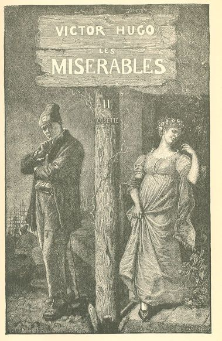
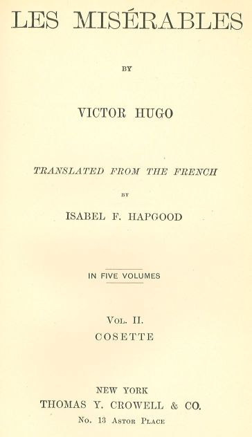

Les Misérables


VOLUME II.—COSETTE
BOOK FIRST.—WATERLOO
CHAPTER I—WHAT IS MET WITH ON THE WAY FROM NIVELLES
Last year (1861), on a beautiful May morning, a traveller, the person who is telling
this story, was coming from Nivelles, and directing his course towards La Hulpe. He
was on foot. He was pursuing a broad paved road, which undulated between two rows
of trees, over the hills which succeed each other, raise the road and let it fall
again, and produce something in the nature of enormous waves.
He had passed Lillois and Bois-Seigneur-Isaac. In the west he perceived the slate-roofed
tower of Braine-l'Alleud, which has the form of a reversed vase. He had just left
behind a wood upon an eminence; and at the angle of the cross-road, by the side of
a sort of mouldy gibbet bearing the inscription Ancient Barrier No. 4, a public house,
bearing on its front this sign: At the Four Winds (Aux Quatre Vents). Echabeau, Private
Cafe.
A quarter of a league further on, he arrived at the bottom of a little valley, where
there is water which passes beneath an arch made through the embankment of the road.
The clump of sparsely planted but very green trees, which fills the valley on one
side of the road, is dispersed over the meadows on the other, and disappears gracefully
and as in order in the direction of Braine-l'Alleud.
On the right, close to the road, was an inn, with a four-wheeled cart at the door,
a large bundle of hop-poles, a plough, a heap of dried brushwood near a flourishing
hedge, lime smoking in a square hole, and a ladder suspended along an old penthouse
with straw partitions. A young girl was weeding in a field, where a huge yellow poster,
probably of some outside spectacle, such as a parish festival, was fluttering in the
wind. At one corner of the inn, beside a pool in which a flotilla of ducks was navigating,
a badly paved path plunged into the bushes. The wayfarer struck into this.
After traversing a hundred paces, skirting a wall of the fifteenth century, surmounted
by a pointed gable, with bricks set in contrast, he found himself before a large door
of arched stone, with a rectilinear impost, in the sombre style of Louis XIV., flanked
by two flat medallions. A severe facade rose above this door; a wall, perpendicular
to the facade, almost touched the door, and flanked it with an abrupt right angle.
In the meadow before the door lay three harrows, through which, in disorder, grew
all the flowers of May. The door was closed. The two decrepit leaves which barred
it were ornamented with an old rusty knocker.
The sun was charming; the branches had that soft shivering of May, which seems to
proceed rather from the nests than from the wind. A brave little bird, probably a
lover, was carolling in a distracted manner in a large tree.
The wayfarer bent over and examined a rather large circular excavation, resembling
the hollow of a sphere, in the stone on the left, at the foot of the pier of the door.
At this moment the leaves of the door parted, and a peasant woman emerged.
She saw the wayfarer, and perceived what he was looking at.
"It was a French cannon-ball which made that," she said to him. And she added:—
"That which you see there, higher up in the door, near a nail, is the hole of a big
iron bullet as large as an egg. The bullet did not pierce the wood."
"What is the name of this place?" inquired the wayfarer.
"Hougomont," said the peasant woman.
The traveller straightened himself up. He walked on a few paces, and went off to look
over the tops of the hedges. On the horizon through the trees, he perceived a sort
of little elevation, and on this elevation something which at that distance resembled
a lion.
He was on the battle-field of Waterloo.
CHAPTER II—HOUGOMONT
Hougomont,—this was a funereal spot, the beginning of the obstacle, the first resistance,
which that great wood-cutter of Europe, called Napoleon, encountered at Waterloo,
the first knot under the blows of his axe.
It was a chateau; it is no longer anything but a farm. For the antiquary, Hougomont
is Hugomons. This manor was built by Hugo, Sire of Somerel, the same who endowed the
sixth chaplaincy of the Abbéy of Villiers.
The traveller pushed open the door, elbowed an ancient calash under the porch, and
entered the courtyard.
The first thing which struck him in this paddock was a door of the sixteenth century,
which here simulates an arcade, everything else having fallen prostrate around it.
A monumental aspect often has its birth in ruin. In a wall near the arcade opens another
arched door, of the time of Henry IV., permitting a glimpse of the trees of an orchard;
beside this door, a manure-hole, some pickaxes, some shovels, some carts, an old well,
with its flagstone and its iron reel, a chicken jumping, and a turkey spreading its
tail, a chapel surmounted by a small bell-tower, a blossoming pear-tree trained in
espalier against the wall of the chapel—behold the court, the conquest of which was
one of Napoleon's dreams. This corner of earth, could he but have seized it, would,
perhaps, have given him the world likewise. Chickens are scattering its dust abroad
with their beaks. A growl is audible; it is a huge dog, who shows his teeth and replaces
the English.
The English behaved admirably there. Cooke's four companies of guards there held out
for seven hours against the fury of an army.
Hougomont viewed on the map, as a geometrical plan, comprising buildings and enclosures,
presents a sort of irregular rectangle, one angle of which is nicked out. It is this
angle which contains the southern door, guarded by this wall, which commands it only
a gun's length away. Hougomont has two doors,—the southern door, that of the chateau;
and the northern door, belonging to the farm. Napoleon sent his brother Jerome against
Hougomont; the divisions of Foy, Guilleminot, and Bachelu hurled themselves against
it; nearly the entire corps of Reille was employed against it, and miscarried; Kellermann's
balls were exhausted on this heroic section of wall. Bauduin's brigade was not strong
enough to force Hougomont on the north, and the brigade of Soye could not do more
than effect the beginning of a breach on the south, but without taking it.
The farm buildings border the courtyard on the south. A bit of the north door, broken
by the French, hangs suspended to the wall. It consists of four planks nailed to two
cross-beams, on which the scars of the attack are visible.
The northern door, which was beaten in by the French, and which has had a piece applied
to it to replace the panel suspended on the wall, stands half-open at the bottom of
the paddock; it is cut squarely in the wall, built of stone below, of brick above
which closes in the courtyard on the north. It is a simple door for carts, such as
exist in all farms, with the two large leaves made of rustic planks: beyond lie the
meadows. The dispute over this entrance was furious. For a long time, all sorts of
imprints of bloody hands were visible on the door-posts. It was there that Bauduin
was killed.
The storm of the combat still lingers in this courtyard; its horror is visible there;
the confusion of the fray was petrified there; it lives and it dies there; it was
only yesterday. The walls are in the death agony, the stones fall; the breaches cry
aloud; the holes are wounds; the drooping, quivering trees seem to be making an effort
to flee.
This courtyard was more built up in 1815 than it is to-day. Buildings which have since
been pulled down then formed redans and angles.
The English barricaded themselves there; the French made their way in, but could not
stand their ground. Beside the chapel, one wing of the chateau, the only ruin now
remaining of the manor of Hougomont, rises in a crumbling state,—disembowelled, one
might say. The chateau served for a dungeon, the chapel for a block-house. There men
exterminated each other. The French, fired on from every point,—from behind the walls,
from the summits of the garrets, from the depths of the cellars, through all the casements,
through all the air-holes, through every crack in the stones,—fetched fagots and set
fire to walls and men; the reply to the grape-shot was a conflagration.
In the ruined wing, through windows garnished with bars of iron, the dismantled chambers
of the main building of brick are visible; the English guards were in ambush in these
rooms; the spiral of the staircase, cracked from the ground floor to the very roof,
appears like the inside of a broken shell. The staircase has two stories; the English,
besieged on the staircase, and massed on its upper steps, had cut off the lower steps.
These consisted of large slabs of blue stone, which form a heap among the nettles.
Half a score of steps still cling to the wall; on the first is cut the figure of a
trident. These inaccessible steps are solid in their niches. All the rest resembles
a jaw which has been denuded of its teeth. There are two old trees there: one is dead;
the other is wounded at its base, and is clothed with verdure in April. Since 1815
it has taken to growing through the staircase.
A massacre took place in the chapel. The interior, which has recovered its calm, is
singular. The mass has not been said there since the carnage. Nevertheless, the altar
has been left there—an altar of unpolished wood, placed against a background of roughhewn
stone. Four whitewashed walls, a door opposite the altar, two small arched windows;
over the door a large wooden crucifix, below the crucifix a square air-hole stopped
up with a bundle of hay; on the ground, in one corner, an old window-frame with the
glass all broken to pieces—such is the chapel. Near the altar there is nailed up a
wooden statue of Saint Anne, of the fifteenth century; the head of the infant Jesus
has been carried off by a large ball. The French, who were masters of the chapel for
a moment, and were then dislodged, set fire to it. The flames filled this building;
it was a perfect furnace; the door was burned, the floor was burned, the wooden Christ
was not burned. The fire preyed upon his feet, of which only the blackened stumps
are now to be seen; then it stopped,—a miracle, according to the assertion of the
people of the neighborhood. The infant Jesus, decapitated, was less fortunate than
the Christ.
The walls are covered with inscriptions. Near the feet of Christ this name is to be
read: Henquinez. Then these others: Conde de Rio Maior Marques y Marquesa de Almagro
(Habana). There are French names with exclamation points,—a sign of wrath. The wall
was freshly whitewashed in 1849. The nations insulted each other there.
It was at the door of this chapel that the corpse was picked up which held an axe
in its hand; this corpse was Sub-Lieutenant Legros.
On emerging from the chapel, a well is visible on the left. There are two in this
courtyard. One inquires, Why is there no bucket and pulley to this? It is because
water is no longer drawn there. Why is water not drawn there? Because it is full of
skeletons.
The last person who drew water from the well was named Guillaume van Kylsom. He was
a peasant who lived at Hougomont, and was gardener there. On the 18th of June, 1815,
his family fled and concealed themselves in the woods.
The forest surrounding the Abbéy of Villiers sheltered these unfortunate people who
had been scattered abroad, for many days and nights. There are at this day certain
traces recognizable, such as old boles of burned trees, which mark the site of these
poor bivouacs trembling in the depths of the thickets.
Guillaume van Kylsom remained at Hougomont, "to guard the chateau," and concealed
himself in the cellar. The English discovered him there. They tore him from his hiding-place,
and the combatants forced this frightened man to serve them, by administering blows
with the flats of their swords. They were thirsty; this Guillaume brought them water.
It was from this well that he drew it. Many drank there their last draught. This well
where drank so many of the dead was destined to die itself.
After the engagement, they were in haste to bury the dead bodies. Death has a fashion
of harassing victory, and she causes the pest to follow glory. The typhus is a concomitant
of triumph. This well was deep, and it was turned into a sepulchre. Three hundred
dead bodies were cast into it. With too much haste perhaps. Were they all dead? Legend
says they were not. It seems that on the night succeeding the interment, feeble voices
were heard calling from the well.
This well is isolated in the middle of the courtyard. Three walls, part stone, part
brick, and simulating a small, square tower, and folded like the leaves of a screen,
surround it on all sides. The fourth side is open. It is there that the water was
drawn. The wall at the bottom has a sort of shapeless loophole, possibly the hole
made by a shell. This little tower had a platform, of which only the beams remain.
The iron supports of the well on the right form a cross. On leaning over, the eye
is lost in a deep cylinder of brick which is filled with a heaped-up mass of shadows.
The base of the walls all about the well is concealed in a growth of nettles.
This well has not in front of it that large blue slab which forms the table for all
wells in Belgium. The slab has here been replaced by a cross-beam, against which lean
five or six shapeless fragments of knotty and petrified wood which resemble huge bones.
There is no longer either pail, chain, or pulley; but there is still the stone basin
which served the overflow. The rain-water collects there, and from time to time a
bird of the neighboring forests comes thither to drink, and then flies away. One house
in this ruin, the farmhouse, is still inhabited. The door of this house opens on the
courtyard. Upon this door, beside a pretty Gothic lock-plate, there is an iron handle
with trefoils placed slanting. At the moment when the Hanoverian lieutenant, Wilda,
grasped this handle in order to take refuge in the farm, a French sapper hewed off
his hand with an axe.
The family who occupy the house had for their grandfather Guillaume van Kylsom, the
old gardener, dead long since. A woman with gray hair said to us: "I was there. I
was three years old. My sister, who was older, was terrified and wept. They carried
us off to the woods. I went there in my mother's arms. We glued our ears to the earth
to hear. I imitated the cannon, and went boum! boum!"
A door opening from the courtyard on the left led into the orchard, so we were told.
The orchard is terrible.
It is in three parts; one might almost say, in three acts. The first part is a garden,
the second is an orchard, the third is a wood. These three parts have a common enclosure:
on the side of the entrance, the buildings of the chateau and the farm; on the left,
a hedge; on the right, a wall; and at the end, a wall. The wall on the right is of
brick, the wall at the bottom is of stone. One enters the garden first. It slopes
downwards, is planted with gooseberry bushes, choked with a wild growth of vegetation,
and terminated by a monumental terrace of cut stone, with balustrade with a double
curve.
It was a seignorial garden in the first French style which preceded Le Notre; to-day
it is ruins and briars. The pilasters are surmounted by globes which resemble cannon-balls
of stone. Forty-three balusters can still be counted on their sockets; the rest lie
prostrate in the grass. Almost all bear scratches of bullets. One broken baluster
is placed on the pediment like a fractured leg.
It was in this garden, further down than the orchard, that six light-infantry men
of the 1st, having made their way thither, and being unable to escape, hunted down
and caught like bears in their dens, accepted the combat with two Hanoverian companies,
one of which was armed with carbines. The Hanoverians lined this balustrade and fired
from above. The infantry men, replying from below, six against two hundred, intrepid
and with no shelter save the currant-bushes, took a quarter of an hour to die.
One mounts a few steps and passes from the garden into the orchard, properly speaking.
There, within the limits of those few square fathoms, fifteen hundred men fell in
less than an hour. The wall seems ready to renew the combat. Thirty-eight loopholes,
pierced by the English at irregular heights, are there still. In front of the sixth
are placed two English tombs of granite. There are loopholes only in the south wall,
as the principal attack came from that quarter. The wall is hidden on the outside
by a tall hedge; the French came up, thinking that they had to deal only with a hedge,
crossed it, and found the wall both an obstacle and an ambuscade, with the English
guards behind it, the thirty-eight loopholes firing at once a shower of grape-shot
and balls, and Soye's brigade was broken against it. Thus Waterloo began.
Nevertheless, the orchard was taken. As they had no ladders, the French scaled it
with their nails. They fought hand to hand amid the trees. All this grass has been
soaked in blood. A battalion of Nassau, seven hundred strong, was overwhelmed there.
The outside of the wall, against which Kellermann's two batteries were trained, is
gnawed by grape-shot.
This orchard is sentient, like others, in the month of May. It has its buttercups
and its daisies; the grass is tall there; the cart-horses browse there; cords of hair,
on which linen is drying, traverse the spaces between the trees and force the passer-by
to bend his head; one walks over this uncultivated land, and one's foot dives into
mole-holes. In the middle of the grass one observes an uprooted tree-bole which lies
there all verdant. Major Blackmann leaned against it to die. Beneath a great tree
in the neighborhood fell the German general, Duplat, descended from a French family
which fled on the revocation of the Edict of Nantes. An aged and falling apple-tree
leans far over to one side, its wound dressed with a bandage of straw and of clayey
loam. Nearly all the apple-trees are falling with age. There is not one which has
not had its bullet or its biscayan.6 The skeletons of dead trees abound in this orchard. Crows fly through their branches,
and at the end of it is a wood full of violets.
Bauduin, killed, Foy wounded, conflagration, massacre, carnage, a rivulet formed of
English blood, French blood, German blood mingled in fury, a well crammed with corpses,
the regiment of Nassau and the regiment of Brunswick destroyed, Duplat killed, Blackmann
killed, the English Guards mutilated, twenty French battalions, besides the forty
from Reille's corps, decimated, three thousand men in that hovel of Hougomont alone
cut down, slashed to pieces, shot, burned, with their throats cut,—and all this so
that a peasant can say to-day to the traveller: Monsieur, give me three francs, and
if you like, I will explain to you the affair of Waterloo!
CHAPTER III—THE EIGHTEENTH OF JUNE, 1815
Let us turn back,—that is one of the story-teller's rights,—and put ourselves once
more in the year 1815, and even a little earlier than the epoch when the action narrated
in the first part of this book took place.
If it had not rained in the night between the 17th and the 18th of June, 1815, the
fate of Europe would have been different. A few drops of water, more or less, decided
the downfall of Napoleon. All that Providence required in order to make Waterloo the
end of Austerlitz was a little more rain, and a cloud traversing the sky out of season
sufficed to make a world crumble.
The battle of Waterloo could not be begun until half-past eleven o'clock, and that
gave Blucher time to come up. Why? Because the ground was wet. The artillery had to
wait until it became a little firmer before they could manoeuvre.
Napoleon was an artillery officer, and felt the effects of this. The foundation of
this wonderful captain was the man who, in the report to the Directory on Aboukir,
said: Such a one of our balls killed six men. All his plans of battle were arranged
for projectiles. The key to his victory was to make the artillery converge on one
point. He treated the strategy of the hostile general like a citadel, and made a breach
in it. He overwhelmed the weak point with grape-shot; he joined and dissolved battles
with cannon. There was something of the sharpshooter in his genius. To beat in squares,
to pulverize regiments, to break lines, to crush and disperse masses,—for him everything
lay in this, to strike, strike, strike incessantly,—and he intrusted this task to
the cannon-ball. A redoubtable method, and one which, united with genius, rendered
this gloomy athlete of the pugilism of war invincible for the space of fifteen years.
On the 18th of June, 1815, he relied all the more on his artillery, because he had
numbers on his side. Wellington had only one hundred and fifty-nine mouths of fire;
Napoleon had two hundred and forty.
Suppose the soil dry, and the artillery capable of moving, the action would have begun
at six o'clock in the morning. The battle would have been won and ended at two o'clock,
three hours before the change of fortune in favor of the Prussians. What amount of
blame attaches to Napoleon for the loss of this battle? Is the shipwreck due to the
pilot?
Was it the evident physical decline of Napoleon that complicated this epoch by an
inward diminution of force? Had the twenty years of war worn out the blade as it had
worn the scabbard, the soul as well as the body? Did the veteran make himself disastrously
felt in the leader? In a word, was this genius, as many historians of note have thought,
suffering from an eclipse? Did he go into a frenzy in order to disguise his weakened
powers from himself? Did he begin to waver under the delusion of a breath of adventure?
Had he become—a grave matter in a general—unconscious of peril? Is there an age, in
this class of material great men, who may be called the giants of action, when genius
grows short-sighted? Old age has no hold on the geniuses of the ideal; for the Dantes
and Michael Angelos to grow old is to grow in greatness; is it to grow less for the
Hannibals and the Bonapartes? Had Napoleon lost the direct sense of victory? Had he
reached the point where he could no longer recognize the reef, could no longer divine
the snare, no longer discern the crumbling brink of abysses? Had he lost his power
of scenting out catastrophes? He who had in former days known all the roads to triumph,
and who, from the summit of his chariot of lightning, pointed them out with a sovereign
finger, had he now reached that state of sinister amazement when he could lead his
tumultuous legions harnessed to it, to the precipice? Was he seized at the age of
forty-six with a supreme madness? Was that titanic charioteer of destiny no longer
anything more than an immense dare-devil?
We do not think so.
His plan of battle was, by the confession of all, a masterpiece. To go straight to
the centre of the Allies' line, to make a breach in the enemy, to cut them in two,
to drive the British half back on Hal, and the Prussian half on Tongres, to make two
shattered fragments of Wellington and Blucher, to carry Mont-Saint-Jean, to seize
Brussels, to hurl the German into the Rhine, and the Englishman into the sea. All
this was contained in that battle, according to Napoleon. Afterwards people would
see.
Of course, we do not here pretend to furnish a history of the battle of Waterloo;
one of the scenes of the foundation of the story which we are relating is connected
with this battle, but this history is not our subject; this history, moreover, has
been finished, and finished in a masterly manner, from one point of view by Napoleon,
and from another point of view by a whole pleiad of historians.7
As for us, we leave the historians at loggerheads; we are but a distant witness, a
passer-by on the plain, a seeker bending over that soil all made of human flesh, taking
appearances for realities, perchance; we have no right to oppose, in the name of science,
a collection of facts which contain illusions, no doubt; we possess neither military
practice nor strategic ability which authorize a system; in our opinion, a chain of
accidents dominated the two leaders at Waterloo; and when it becomes a question of
destiny, that mysterious culprit, we judge like that ingenious judge, the populace.
CHAPTER IV—A
Those persons who wish to gain a clear idea of the battle of Waterloo have only to
place, mentally, on the ground, a capital A. The left limb of the A is the road to
Nivelles, the right limb is the road to Genappe, the tie of the A is the hollow road
to Ohain from Braine-l'Alleud. The top of the A is Mont-Saint-Jean, where Wellington
is; the lower left tip is Hougomont, where Reille is stationed with Jerome Bonaparte;
the right tip is the Belle-Alliance, where Napoleon was. At the centre of this chord
is the precise point where the final word of the battle was pronounced. It was there
that the lion has been placed, the involuntary symbol of the supreme heroism of the
Imperial Guard.
The triangle included in the top of the A, between the two limbs and the tie, is the
plateau of Mont-Saint-Jean. The dispute over this plateau constituted the whole battle.
The wings of the two armies extended to the right and left of the two roads to Genappe
and Nivelles; d'Erlon facing Picton, Reille facing Hill.
Behind the tip of the A, behind the plateau of Mont-Saint-Jean, is the forest of Soignes.
As for the plain itself, let the reader picture to himself a vast undulating sweep
of ground; each rise commands the next rise, and all the undulations mount towards
Mont-Saint-Jean, and there end in the forest.
Two hostile troops on a field of battle are two wrestlers. It is a question of seizing
the opponent round the waist. The one seeks to trip up the other. They clutch at everything:
a bush is a point of support; an angle of the wall offers them a rest to the shoulder;
for the lack of a hovel under whose cover they can draw up, a regiment yields its
ground; an unevenness in the ground, a chance turn in the landscape, a cross-path
encountered at the right moment, a grove, a ravine, can stay the heel of that colossus
which is called an army, and prevent its retreat. He who quits the field is beaten;
hence the necessity devolving on the responsible leader, of examining the most insignificant
clump of trees, and of studying deeply the slightest relief in the ground.
The two generals had attentively studied the plain of Mont-Saint-Jean, now called
the plain of Waterloo. In the preceding year, Wellington, with the sagacity of foresight,
had examined it as the possible seat of a great battle. Upon this spot, and for this
duel, on the 18th of June, Wellington had the good post, Napoleon the bad post. The
English army was stationed above, the French army below.
It is almost superfluous here to sketch the appearance of Napoleon on horseback, glass
in hand, upon the heights of Rossomme, at daybreak, on June 18, 1815. All the world
has seen him before we can show him. That calm profile under the little three-cornered
hat of the school of Brienne, that green uniform, the white revers concealing the
star of the Legion of Honor, his great coat hiding his epaulets, the corner of red
ribbon peeping from beneath his vest, his leather trousers, the white horse with the
saddle-cloth of purple velvet bearing on the corners crowned N's and eagles, Hessian
boots over silk stockings, silver spurs, the sword of Marengo,—that whole figure of
the last of the Caesars is present to all imaginations, saluted with acclamations
by some, severely regarded by others.
That figure stood for a long time wholly in the light; this arose from a certain legendary
dimness evolved by the majority of heroes, and which always veils the truth for a
longer or shorter time; but to-day history and daylight have arrived.
That light called history is pitiless; it possesses this peculiar and divine quality,
that, pure light as it is, and precisely because it is wholly light, it often casts
a shadow in places where people had hitherto beheld rays; from the same man it constructs
two different phantoms, and the one attacks the other and executes justice on it,
and the shadows of the despot contend with the brilliancy of the leader. Hence arises
a truer measure in the definitive judgments of nations. Babylon violated lessens Alexander,
Rome enchained lessens Caesar, Jerusalem murdered lessens Titus, tyranny follows the
tyrant. It is a misfortune for a man to leave behind him the night which bears his
form.
CHAPTER V—THE QUID OBSCURUM OF BATTLES
Every one is acquainted with the first phase of this battle; a beginning which was
troubled, uncertain, hesitating, menacing to both armies, but still more so for the
English than for the French.
It had rained all night, the earth had been cut up by the downpour, the water had
accumulated here and there in the hollows of the plain as if in casks; at some points
the gear of the artillery carriages was buried up to the axles, the circingles of
the horses were dripping with liquid mud. If the wheat and rye trampled down by this
cohort of transports on the march had not filled in the ruts and strewn a litter beneath
the wheels, all movement, particularly in the valleys, in the direction of Papelotte
would have been impossible.
The affair began late. Napoleon, as we have already explained, was in the habit of
keeping all his artillery well in hand, like a pistol, aiming it now at one point,
now at another, of the battle; and it had been his wish to wait until the horse batteries
could move and gallop freely. In order to do that it was necessary that the sun should
come out and dry the soil. But the sun did not make its appearance. It was no longer
the rendezvous of Austerlitz. When the first cannon was fired, the English general,
Colville, looked at his watch, and noted that it was thirty-five minutes past eleven.
The action was begun furiously, with more fury, perhaps, than the Emperor would have
wished, by the left wing of the French resting on Hougomont. At the same time Napoleon
attacked the centre by hurling Quiot's brigade on La Haie-Sainte, and Ney pushed forward
the right wing of the French against the left wing of the English, which rested on
Papelotte.
The attack on Hougomont was something of a feint; the plan was to draw Wellington
thither, and to make him swerve to the left. This plan would have succeeded if the
four companies of the English guards and the brave Belgians of Perponcher's division
had not held the position solidly, and Wellington, instead of massing his troops there,
could confine himself to despatching thither, as reinforcements, only four more companies
of guards and one battalion from Brunswick.
The attack of the right wing of the French on Papelotte was calculated, in fact, to
overthrow the English left, to cut off the road to Brussels, to bar the passage against
possible Prussians, to force Mont-Saint-Jean, to turn Wellington back on Hougomont,
thence on Braine-l'Alleud, thence on Hal; nothing easier. With the exception of a
few incidents this attack succeeded Papelotte was taken; La Haie-Sainte was carried.
A detail to be noted. There was in the English infantry, particularly in Kempt's brigade,
a great many raw recruits. These young soldiers were valiant in the presence of our
redoubtable infantry; their inexperience extricated them intrepidly from the dilemma;
they performed particularly excellent service as skirmishers: the soldier skirmisher,
left somewhat to himself, becomes, so to speak, his own general. These recruits displayed
some of the French ingenuity and fury. This novice of an infantry had dash. This displeased
Wellington.
After the taking of La Haie-Sainte the battle wavered.
There is in this day an obscure interval, from mid-day to four o'clock; the middle
portion of this battle is almost indistinct, and participates in the sombreness of
the hand-to-hand conflict. Twilight reigns over it. We perceive vast fluctuations
in that fog, a dizzy mirage, paraphernalia of war almost unknown to-day, pendant colbacks,
floating sabre-taches, cross-belts, cartridge-boxes for grenades, hussar dolmans,
red boots with a thousand wrinkles, heavy shakos garlanded with torsades, the almost
black infantry of Brunswick mingled with the scarlet infantry of England, the English
soldiers with great, white circular pads on the slopes of their shoulders for epaulets,
the Hanoverian light-horse with their oblong casques of leather, with brass hands
and red horse-tails, the Scotch with their bare knees and plaids, the great white
gaiters of our grenadiers; pictures, not strategic lines—what Salvator Rosa requires,
not what is suited to the needs of Gribeauval.
A certain amount of tempest is always mingled with a battle. Quid obscurum, quid divinum.
Each historian traces, to some extent, the particular feature which pleases him amid
this pell-mell. Whatever may be the combinations of the generals, the shock of armed
masses has an incalculable ebb. During the action the plans of the two leaders enter
into each other and become mutually thrown out of shape. Such a point of the field
of battle devours more combatants than such another, just as more or less spongy soils
soak up more or less quickly the water which is poured on them. It becomes necessary
to pour out more soldiers than one would like; a series of expenditures which are
the unforeseen. The line of battle waves and undulates like a thread, the trails of
blood gush illogically, the fronts of the armies waver, the regiments form capes and
gulfs as they enter and withdraw; all these reefs are continually moving in front
of each other. Where the infantry stood the artillery arrives, the cavalry rushes
in where the artillery was, the battalions are like smoke. There was something there;
seek it. It has disappeared; the open spots change place, the sombre folds advance
and retreat, a sort of wind from the sepulchre pushes forward, hurls back, distends,
and disperses these tragic multitudes. What is a fray? an oscillation? The immobility
of a mathematical plan expresses a minute, not a day. In order to depict a battle,
there is required one of those powerful painters who have chaos in their brushes.
Rembrandt is better than Vandermeulen; Vandermeulen, exact at noon, lies at three
o'clock. Geometry is deceptive; the hurricane alone is trustworthy. That is what confers
on Folard the right to contradict Polybius. Let us add, that there is a certain instant
when the battle degenerates into a combat, becomes specialized, and disperses into
innumerable detailed feats, which, to borrow the expression of Napoleon himself, "belong
rather to the biography of the regiments than to the history of the army." The historian
has, in this case, the evident right to sum up the whole. He cannot do more than seize
the principal outlines of the struggle, and it is not given to any one narrator, however
conscientious he may be, to fix, absolutely, the form of that horrible cloud which
is called a battle.
This, which is true of all great armed encounters, is particularly applicable to Waterloo.
Nevertheless, at a certain moment in the afternoon the battle came to a point.
CHAPTER VI—FOUR O'CLOCK IN THE AFTERNOON
Towards four o'clock the condition of the English army was serious. The Prince of
Orange was in command of the centre, Hill of the right wing, Picton of the left wing.
The Prince of Orange, desperate and intrepid, shouted to the Hollando-Belgians: "Nassau!
Brunswick! Never retreat!" Hill, having been weakened, had come up to the support
of Wellington; Picton was dead. At the very moment when the English had captured from
the French the flag of the 105th of the line, the French had killed the English general,
Picton, with a bullet through the head. The battle had, for Wellington, two bases
of action, Hougomont and La Haie-Sainte; Hougomont still held out, but was on fire;
La Haie-Sainte was taken. Of the German battalion which defended it, only forty-two
men survived; all the officers, except five, were either dead or captured. Three thousand
combatants had been massacred in that barn. A sergeant of the English Guards, the
foremost boxer in England, reputed invulnerable by his companions, had been killed
there by a little French drummer-boy. Baring had been dislodged, Alten put to the
sword. Many flags had been lost, one from Alten's division, and one from the battalion
of Lunenburg, carried by a prince of the house of Deux-Ponts. The Scotch Grays no
longer existed; Ponsonby's great dragoons had been hacked to pieces. That valiant
cavalry had bent beneath the lancers of Bro and beneath the cuirassiers of Travers;
out of twelve hundred horses, six hundred remained; out of three lieutenant-colonels,
two lay on the earth,—Hamilton wounded, Mater slain. Ponsonby had fallen, riddled
by seven lance-thrusts. Gordon was dead. Marsh was dead. Two divisions, the fifth
and the sixth, had been annihilated.
Hougomont injured, La Haie-Sainte taken, there now existed but one rallying-point,
the centre. That point still held firm. Wellington reinforced it. He summoned thither
Hill, who was at Merle-Braine; he summoned Chasse, who was at Braine-l'Alleud.
The centre of the English army, rather concave, very dense, and very compact, was
strongly posted. It occupied the plateau of Mont-Saint-Jean, having behind it the
village, and in front of it the slope, which was tolerably steep then. It rested on
that stout stone dwelling which at that time belonged to the domain of Nivelles, and
which marks the intersection of the roads—a pile of the sixteenth century, and so
robust that the cannon-balls rebounded from it without injuring it. All about the
plateau the English had cut the hedges here and there, made embrasures in the hawthorn-trees,
thrust the throat of a cannon between two branches, embattled the shrubs. There artillery
was ambushed in the brushwood. This punic labor, incontestably authorized by war,
which permits traps, was so well done, that Haxo, who had been despatched by the Emperor
at nine o'clock in the morning to reconnoitre the enemy's batteries, had discovered
nothing of it, and had returned and reported to Napoleon that there were no obstacles
except the two barricades which barred the road to Nivelles and to Genappe. It was
at the season when the grain is tall; on the edge of the plateau a battalion of Kempt's
brigade, the 95th, armed with carabines, was concealed in the tall wheat.
Thus assured and buttressed, the centre of the Anglo-Dutch army was well posted. The
peril of this position lay in the forest of Soignes, then adjoining the field of battle,
and intersected by the ponds of Groenendael and Boitsfort. An army could not retreat
thither without dissolving; the regiments would have broken up immediately there.
The artillery would have been lost among the morasses. The retreat, according to many
a man versed in the art,—though it is disputed by others,—would have been a disorganized
flight.
To this centre, Wellington added one of Chasse's brigades taken from the right wing,
and one of Wincke's brigades taken from the left wing, plus Clinton's division. To
his English, to the regiments of Halkett, to the brigades of Mitchell, to the guards
of Maitland, he gave as reinforcements and aids, the infantry of Brunswick, Nassau's
contingent, Kielmansegg's Hanoverians, and Ompteda's Germans. This placed twenty-six
battalions under his hand. The right wing, as Charras says, was thrown back on the
centre. An enormous battery was masked by sacks of earth at the spot where there now
stands what is called the "Museum of Waterloo." Besides this, Wellington had, behind
a rise in the ground, Somerset's Dragoon Guards, fourteen hundred horse strong. It
was the remaining half of the justly celebrated English cavalry. Ponsonby destroyed,
Somerset remained.
The battery, which, if completed, would have been almost a redoubt, was ranged behind
a very low garden wall, backed up with a coating of bags of sand and a large slope
of earth. This work was not finished; there had been no time to make a palisade for
it.
Wellington, uneasy but impassive, was on horseback, and there remained the whole day
in the same attitude, a little in advance of the old mill of Mont-Saint-Jean, which
is still in existence, beneath an elm, which an Englishman, an enthusiastic vandal,
purchased later on for two hundred francs, cut down, and carried off. Wellington was
coldly heroic. The bullets rained about him. His aide-de-camp, Gordon, fell at his
side. Lord Hill, pointing to a shell which had burst, said to him: "My lord, what
are your orders in case you are killed?" "To do like me," replied Wellington. To Clinton
he said laconically, "To hold this spot to the last man." The day was evidently turning
out ill. Wellington shouted to his old companions of Talavera, of Vittoria, of Salamanca:
"Boys, can retreat be thought of? Think of old England!"
Towards four o'clock, the English line drew back. Suddenly nothing was visible on
the crest of the plateau except the artillery and the sharpshooters; the rest had
disappeared: the regiments, dislodged by the shells and the French bullets, retreated
into the bottom, now intersected by the back road of the farm of Mont-Saint-Jean;
a retrograde movement took place, the English front hid itself, Wellington drew back.
"The beginning of retreat!" cried Napoleon.
CHAPTER VII—NAPOLEON IN A GOOD HUMOR
The Emperor, though ill and discommoded on horseback by a local trouble, had never
been in a better humor than on that day. His impenetrability had been smiling ever
since the morning. On the 18th of June, that profound soul masked by marble beamed
blindly. The man who had been gloomy at Austerlitz was gay at Waterloo. The greatest
favorites of destiny make mistakes. Our joys are composed of shadow. The supreme smile
is God's alone.
Ridet Caesar, Pompeius flebit, said the legionaries of the Fulminatrix Legion. Pompey
was not destined to weep on that occasion, but it is certain that Caesar laughed.
While exploring on horseback at one o'clock on the preceding night, in storm and rain,
in company with Bertrand, the communes in the neighborhood of Rossomme, satisfied
at the sight of the long line of the English camp-fires illuminating the whole horizon
from Frischemont to Braine-l'Alleud, it had seemed to him that fate, to whom he had
assigned a day on the field of Waterloo, was exact to the appointment; he stopped
his horse, and remained for some time motionless, gazing at the lightning and listening
to the thunder; and this fatalist was heard to cast into the darkness this mysterious
saying, "We are in accord." Napoleon was mistaken. They were no longer in accord.
He took not a moment for sleep; every instant of that night was marked by a joy for
him. He traversed the line of the principal outposts, halting here and there to talk
to the sentinels. At half-past two, near the wood of Hougomont, he heard the tread
of a column on the march; he thought at the moment that it was a retreat on the part
of Wellington. He said: "It is the rear-guard of the English getting under way for
the purpose of decamping. I will take prisoners the six thousand English who have
just arrived at Ostend." He conversed expansively; he regained the animation which
he had shown at his landing on the first of March, when he pointed out to the Grand-Marshal
the enthusiastic peasant of the Gulf Juan, and cried, "Well, Bertrand, here is a reinforcement
already!" On the night of the 17th to the 18th of June he rallied Wellington. "That
little Englishman needs a lesson," said Napoleon. The rain redoubled in violence;
the thunder rolled while the Emperor was speaking.
At half-past three o'clock in the morning, he lost one illusion; officers who had
been despatched to reconnoitre announced to him that the enemy was not making any
movement. Nothing was stirring; not a bivouac-fire had been extinguished; the English
army was asleep. The silence on earth was profound; the only noise was in the heavens.
At four o'clock, a peasant was brought in to him by the scouts; this peasant had served
as guide to a brigade of English cavalry, probably Vivian's brigade, which was on
its way to take up a position in the village of Ohain, at the extreme left. At five
o'clock, two Belgian deserters reported to him that they had just quitted their regiment,
and that the English army was ready for battle. "So much the better!" exclaimed Napoleon.
"I prefer to overthrow them rather than to drive them back."
In the morning he dismounted in the mud on the slope which forms an angle with the
Plancenoit road, had a kitchen table and a peasant's chair brought to him from the
farm of Rossomme, seated himself, with a truss of straw for a carpet, and spread out
on the table the chart of the battle-field, saying to Soult as he did so, "A pretty
checker-board."
In consequence of the rains during the night, the transports of provisions, embedded
in the soft roads, had not been able to arrive by morning; the soldiers had had no
sleep; they were wet and fasting. This did not prevent Napoleon from exclaiming cheerfully
to Ney, "We have ninety chances out of a hundred." At eight o'clock the Emperor's
breakfast was brought to him. He invited many generals to it. During breakfast, it
was said that Wellington had been to a ball two nights before, in Brussels, at the
Duchess of Richmond's; and Soult, a rough man of war, with a face of an archbishop,
said, "The ball takes place to-day." The Emperor jested with Ney, who said, "Wellington
will not be so simple as to wait for Your Majesty." That was his way, however. "He
was fond of jesting," says Fleury de Chaboulon. "A merry humor was at the foundation
of his character," says Gourgaud. "He abounded in pleasantries, which were more peculiar
than witty," says Benjamin Constant. These gayeties of a giant are worthy of insistence.
It was he who called his grenadiers "his grumblers"; he pinched their ears; he pulled
their mustaches. "The Emperor did nothing but play pranks on us," is the remark of
one of them. During the mysterious trip from the island of Elba to France, on the
27th of February, on the open sea, the French brig of war, Le Zephyr, having encountered
the brig L'Inconstant, on which Napoleon was concealed, and having asked the news
of Napoleon from L'Inconstant, the Emperor, who still wore in his hat the white and
amaranthine cockade sown with bees, which he had adopted at the isle of Elba, laughingly
seized the speaking-trumpet, and answered for himself, "The Emperor is well." A man
who laughs like that is on familiar terms with events. Napoleon indulged in many fits
of this laughter during the breakfast at Waterloo. After breakfast he meditated for
a quarter of an hour; then two generals seated themselves on the truss of straw, pen
in hand and their paper on their knees, and the Emperor dictated to them the order
of battle.
At nine o'clock, at the instant when the French army, ranged in echelons and set in
motion in five columns, had deployed—the divisions in two lines, the artillery between
the brigades, the music at their head; as they beat the march, with rolls on the drums
and the blasts of trumpets, mighty, vast, joyous, a sea of casques, of sabres, and
of bayonets on the horizon, the Emperor was touched, and twice exclaimed, "Magnificent!
Magnificent!"
Between nine o'clock and half-past ten the whole army, incredible as it may appear,
had taken up its position and ranged itself in six lines, forming, to repeat the Emperor's
expression, "the figure of six V's." A few moments after the formation of the battle-array,
in the midst of that profound silence, like that which heralds the beginning of a
storm, which precedes engagements, the Emperor tapped Haxo on the shoulder, as he
beheld the three batteries of twelve-pounders, detached by his orders from the corps
of Erlon, Reille, and Lobau, and destined to begin the action by taking Mont-Saint-Jean,
which was situated at the intersection of the Nivelles and the Genappe roads, and
said to him, "There are four and twenty handsome maids, General."
Sure of the issue, he encouraged with a smile, as they passed before him, the company
of sappers of the first corps, which he had appointed to barricade Mont-Saint-Jean
as soon as the village should be carried. All this serenity had been traversed by
but a single word of haughty pity; perceiving on his left, at a spot where there now
stands a large tomb, those admirable Scotch Grays, with their superb horses, massing
themselves, he said, "It is a pity."
Then he mounted his horse, advanced beyond Rossomme, and selected for his post of
observation a contracted elevation of turf to the right of the road from Genappe to
Brussels, which was his second station during the battle. The third station, the one
adopted at seven o'clock in the evening, between La Belle-Alliance and La Haie-Sainte,
is formidable; it is a rather elevated knoll, which still exists, and behind which
the guard was massed on a slope of the plain. Around this knoll the balls rebounded
from the pavements of the road, up to Napoleon himself. As at Brienne, he had over
his head the shriek of the bullets and of the heavy artillery. Mouldy cannon-balls,
old sword-blades, and shapeless projectiles, eaten up with rust, were picked up at
the spot where his horse' feet stood. Scabra rubigine. A few years ago, a shell of
sixty pounds, still charged, and with its fuse broken off level with the bomb, was
unearthed. It was at this last post that the Emperor said to his guide, Lacoste, a
hostile and terrified peasant, who was attached to the saddle of a hussar, and who
turned round at every discharge of canister and tried to hide behind Napoleon: "Fool,
it is shameful! You'll get yourself killed with a ball in the back." He who writes
these lines has himself found, in the friable soil of this knoll, on turning over
the sand, the remains of the neck of a bomb, disintegrated, by the oxidization of
six and forty years, and old fragments of iron which parted like elder-twigs between
the fingers.
Every one is aware that the variously inclined undulations of the plains, where the
engagement between Napoleon and Wellington took place, are no longer what they were
on June 18, 1815. By taking from this mournful field the wherewithal to make a monument
to it, its real relief has been taken away, and history, disconcerted, no longer finds
her bearings there. It has been disfigured for the sake of glorifying it. Wellington,
when he beheld Waterloo once more, two years later, exclaimed, "They have altered
my field of battle!" Where the great pyramid of earth, surmounted by the lion, rises
to-day, there was a hillock which descended in an easy slope towards the Nivelles
road, but which was almost an escarpment on the side of the highway to Genappe. The
elevation of this escarpment can still be measured by the height of the two knolls
of the two great sepulchres which enclose the road from Genappe to Brussels: one,
the English tomb, is on the left; the other, the German tomb, is on the right. There
is no French tomb. The whole of that plain is a sepulchre for France. Thanks to the
thousands upon thousands of cartloads of earth employed in the hillock one hundred
and fifty feet in height and half a mile in circumference, the plateau of Mont-Saint-Jean
is now accessible by an easy slope. On the day of battle, particularly on the side
of La Haie-Sainte, it was abrupt and difficult of approach. The slope there is so
steep that the English cannon could not see the farm, situated in the bottom of the
valley, which was the centre of the combat. On the 18th of June, 1815, the rains had
still farther increased this acclivity, the mud complicated the problem of the ascent,
and the men not only slipped back, but stuck fast in the mire. Along the crest of
the plateau ran a sort of trench whose presence it was impossible for the distant
observer to divine.
What was this trench? Let us explain. Braine-l'Alleud is a Belgian village; Ohain
is another. These villages, both of them concealed in curves of the landscape, are
connected by a road about a league and a half in length, which traverses the plain
along its undulating level, and often enters and buries itself in the hills like a
furrow, which makes a ravine of this road in some places. In 1815, as at the present
day, this road cut the crest of the plateau of Mont-Saint-Jean between the two highways
from Genappe and Nivelles; only, it is now on a level with the plain; it was then
a hollow way. Its two slopes have been appropriated for the monumental hillock. This
road was, and still is, a trench throughout the greater portion of its course; a hollow
trench, sometimes a dozen feet in depth, and whose banks, being too steep, crumbled
away here and there, particularly in winter, under driving rains. Accidents happened
here. The road was so narrow at the Braine-l'Alleud entrance that a passer-by was
crushed by a cart, as is proved by a stone cross which stands near the cemetery, and
which gives the name of the dead, Monsieur Bernard Debrye, Merchant of Brussels, and
the date of the accident, February, 1637.8 It was so deep on the table-land of Mont-Saint-Jean that a peasant, Mathieu Nicaise,
was crushed there, in 1783, by a slide from the slope, as is stated on another stone
cross, the top of which has disappeared in the process of clearing the ground, but
whose overturned pedestal is still visible on the grassy slope to the left of the
highway between La Haie-Sainte and the farm of Mont-Saint-Jean.
On the day of battle, this hollow road whose existence was in no way indicated, bordering
the crest of Mont-Saint-Jean, a trench at the summit of the escarpment, a rut concealed
in the soil, was invisible; that is to say, terrible.